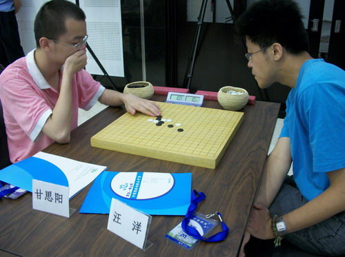

围棋赛下出疑似五子棋
#1 围棋赛下出疑似五子棋 作者：足球赛 发表时间：2010-8-13 16:34:41

2010-06-29 19:37来源：人民网
人们都知道，围棋和五子棋虽然棋盘和棋子有一些相似，但却是绝然不同的两回事。然而你敢相信吗，在一个重大的比赛中，两位围棋高手对弈，开局竟像五子棋。这是今天开赛的阿含桐山杯围棋快棋赛上的一幕。
在中国棋院二楼比赛大厅128名选手在64张棋盘上捉对厮杀。在赛场西北角的甘思阳与汪洋的对于与众不同。围棋的一般从棋盘的角和边开局，如果像五子棋一样开局在棋盘中间落子将是很吃亏的。如果真是这样走在棋盘中间，就有点让对方、或藐视对方、或看不起对方的意思。然而执黑先行的甘思阳一上来，就是这样在棋盘中央的天元附近拍下一粒黑子。
面对甘思阳的挑衅，汪洋如果见到一点便宜就捡，见好就收，赶快到边角走棋，可能占到好处，至少会很快化解对手的先手之利。但血气方刚的汪洋并没有这样，而是以子之矛攻子之盾，也在中央拍下一粒白子。
接着，双方互不相让，都执着地在中央行棋，看上去就像在下五子棋一样。这样相互斗气的局面，在今天的60多盘棋中绝无仅有，在以往的围棋比赛中也是不多见的。看来，很多棋手认为，围棋比赛，争斗的不仅仅是盘面、棋力，现在更强调心理、气势、精神等意志的力量。正所谓，输棋不能输气势。
最后，双方你来我往各在中央附近下了十来颗子，才逐渐将战火燃烧至黑棋的左下角，争夺告一段落。我因时间关系没有继续看下去，不知道最后结果如何。当然，他们都是围棋高手，肯定是一个围棋的结果，而绝对不会是五子棋的结果。这一点我敢肯定。
［此帖子已被 足球赛 在 2010-8-13 16:36:59 编辑过］